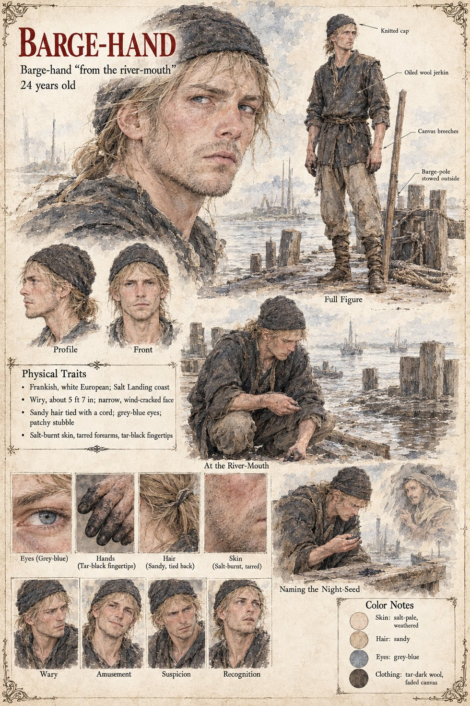

Barge-hand
Barge-hand from the river-mouth · unnamed · 24 years old
A wiry Frank of the Salt Landing coast, twenty-four, about 5 ft 7 in, with a narrow, wind-cracked face, sandy hair tied back with a cord, grey-blue eyes, patchy stubble, salt-burnt skin, tarred forearms and tar-black fingertips, in a knitted cap, an oiled wool jerkin and canvas breeches, his barge-pole stowed outside the frame. The Night-Seed is the first of the names the powder acquires in the first winter, given from a cousin's tale in Chapter 6, in the room of Waldrada's Three Sheaves that the Old Sot's page describes; the sheet's scene is Naming the Night-Seed, and it puts him at a pier rather than in a tavern.
In At the River-Mouth he crouches on the planks with something black between finger and thumb, boats on the water beyond; in Naming the Night-Seed he studies black grains in his palm, with a small faint sketch of a hooded face beside him that the sheet does not caption. The river-mouth is the Salt Landing of the Gazetteer; the sheet does not say who hears the name. His expression panels run Wary, Amusement, Suspicion and Recognition.
Written from the sheet, from what the other Case 4181 pages already say, and from the character notes in the case's publication-prep file; the manuscript itself was not to hand. His age of 24, wiry build, grey-blue eyes, sandy hair, salt-pale weathered skin and tar-dark wool and faded canvas are the sheet's own.